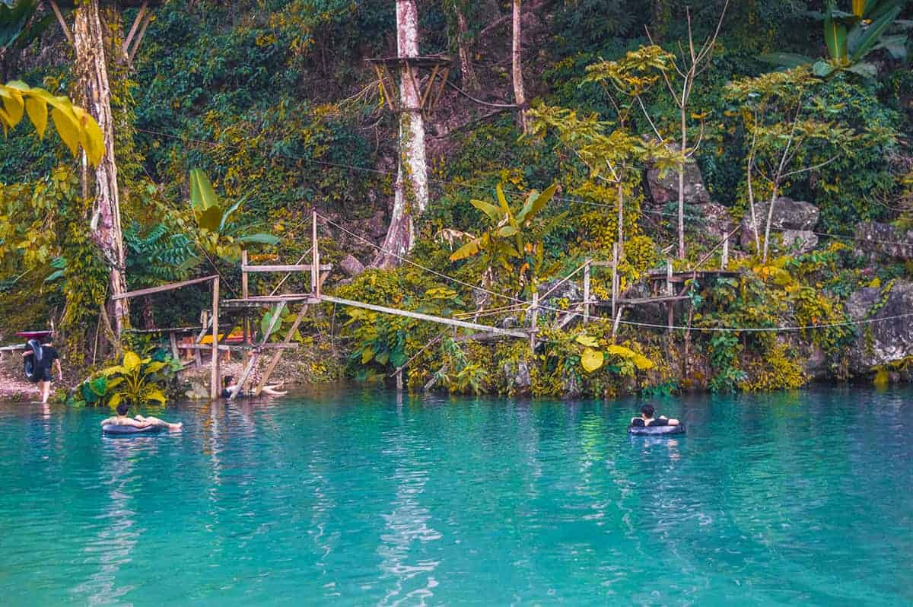

Experiencias de 5 Viajeros
1. Marrakech
Comenzamos nuestro viaje a Marrakech el 4 de junio, llegando al Aeropuerto Internacional de Menara por la noche tras una escala en Barcelona. Marrakech, una de las ciudades más importantes de Marruecos, nos recibió con su bullicio y encanto. Elegimos alojarnos en el Riad Rose Meryam, ubicado en la medina y a pocos metros de la plaza principal.
Al día siguiente, el 5 de junio, nos aventuramos a explorar la ciudad. Visitamos las Tumbas Saadies, el Palacio El Badi, el mercado de especias, el Palacio Bahia y la Medersa Ben Youssef, inmersos en la fascinante cultura y arquitectura de Marrakech. El Zoco nos atrapó con su caos organizado y los vendedores intentando persuadirnos a comprar sus productos.

No podíamos dejar de visitar la emblemática Plaza de Yamaa el Fna, donde la vida de la ciudad cobra vida tanto de día como de noche. También admiramos la imponente Mezquita Koutoubia, aunque lamentablemente no pudimos entrar, ya que la entrada está restringida para los no musulmanes.
Al día siguiente, exploramos la zona nueva de Marrakech, marcando un contraste interesante con la medina. Visitamos los Jardines Majorelle y, a pesar del intenso calor, continuamos nuestro recorrido por la medina, perdiéndonos en su laberinto de callejones.
Concluimos nuestra experiencia en Marrakech organizando el resto del viaje y recibiendo un coche de alquiler para explorar más destinos en Marruecos. Estamos encantados de haber vivido esta aventura y de haber descubierto una cultura tan única y diferente en Marrakech.
2. Vang Vieng
Comenzamos nuestro viaje a Vang Vieng desde Vientiane, la capital de Laos. Después de unos días en Vientiane, reservamos una van desde nuestro hotel para viajar a Vang Vieng por aproximadamente 7€ antes de las 10 am.
No teníamos muchas expectativas sobre Vang Vieng, ya que algunos blogs la describían como un lugar para jóvenes fiesteros centrado en el famoso tubing, mientras que otros la recomendaban por ofrecer mucho más que solo fiesta y alcohol.
Decidimos darle una oportunidad y quedarnos un par de días, principalmente para evitar un largo viaje de 10 horas hasta Luang Prabang, nuestra próxima parada en el viaje.
El trayecto en van fue algo incómodo, ya que éramos los últimos en ser recogidos y nos tocó un asiento incómodo en el medio. Además, el trayecto de unos 180 km fue un poco largo debido al estado regular de la carretera y al tráfico intenso al principio del viaje.
Al llegar al centro de Vang Vieng, nos dimos cuenta de que era una pequeña ciudad ubicada junto al río Nam Song, conocida por sus cerros y relieves kársticos. Nos alojamos en el Consiana Hotel, a solo 100 metros del centro de la ciudad, lo cual fue muy conveniente.

Nuestra primera visita en Vang Vieng fue a la Cueva Than Chang, ubicada a unos 30 minutos a pie desde el pueblo. A pesar del calor, disfrutamos del hermoso paisaje durante la caminata hasta la cueva. Sin embargo, nos decepcionó encontrar elementos artificiales en la cueva, como cables y luces mal colocadas.
Al día siguiente, decidimos explorar las Blue Lagoon 1, 2 y 3 en moto. El camino fue desafiante, lleno de piedras y baches, y tuvimos un pinchazo en la rueda trasera. A pesar de los contratiempos, disfrutamos de las lagunas y decidimos que la visita valió la pena a pesar de las dificultades en el camino.
Durante nuestra estancia, también comenzamos a preocuparnos por el impacto del COVID-19 en nuestro próximo destino, Vietnam, ya que había cancelaciones y restricciones. A pesar de estos desafíos, concluimos que vale la pena visitar Vang Vieng por sus hermosos paisajes y como una parada interesante en nuestro viaje hacia otros destinos.
3. Picos de Europa
Mi experiencia en los Picos de Europa fue realmente excepcional. Después de explorar Cudillero, Gijon y Ribadesella en un día lleno de actividades, nos dirigimos a Las Rozas, donde habíamos reservado una acogedora casa rural para los próximos dos días.
Nuestro principal objetivo era conocer los Picos de Europa, un destino que habíamos esperado con ansias desde que comenzamos nuestro viaje por Galicia en noviembre. El Parque Nacional de los Picos de Europa resultó ser uno de los puntos más destacados de nuestro recorrido en España. Este majestuoso macizo montañoso se encuentra en la cordillera Cantábrica y abarca Asturias, Cantabria y parte de la provincia de León. Ofrece una variedad de actividades, siendo las rutas de senderismo las más destacadas.
Llegamos a Las Rozas en la noche y encontramos nuestra casa rural, Casa Nivia, donde nos esperaba una cálida bienvenida. Los propietarios, Ramón y Nivia, nos brindaron una hospitalidad excepcional y nos proporcionaron valiosa información sobre la zona. La casa era encantadora y asequible, con una acogedora chimenea y todas las comodidades necesarias.
A pesar del frío, no pudimos resistir la tentación de hacer una parrillada fuera de la casa, disfrutando de la comida y el ambiente. Al día siguiente, emocionados, nos dirigimos a explorar los Lagos de Covadonga, nuestro primer encuentro con este increíble parque nacional.
El día estaba soleado y perfecto para nuestra caminata. Rodeados de un entorno impresionante, llegamos a los Lagos de Covadonga, donde pudimos admirar la belleza natural y disfrutar de las vistas panorámicas. Recorrimos senderos nevados y pasamos por lugares emblemáticos como el Lago Enol y el Lago de La Ercina, maravillándonos con la naturaleza que nos rodeaba.
También visitamos lugares como las Minas de Buferrera y el Mirador entrelagos, antes de explorar Covadonga y Cangas de Onis, donde pudimos conocer la Basílica de Covadonga y el Puente Romano, respectivamente. Terminamos nuestro día con una deliciosa fabada asturiana y un merecido descanso en nuestra acogedora casa rural.
Al día siguiente, nos aventuramos en la famosa Ruta del Cares, una experiencia enriquecedora que nos permitió apreciar la majestuosidad de este desfiladero y sus alrededores. Aprovechamos al máximo la ausencia de multitudes debido a la temporada baja y regresamos al punto de partida satisfechos y llenos de gratitud por esta increíble experiencia en los Picos de Europa.
Definitivamente, recomendaría a todos aquellos que deseen visitar esta región que se alojen en Las Rozas y exploren este impresionante paraje natural. Espero volver algún día para descubrir más rincones de esta hermosa provincia y del Parque Nacional de los Picos de Europa.
4. Comandel Region
El domingo 22-01-12, mi compañero y yo decidimos acercarnos a las playas de Whangamata para desayunar antes de explorar la Región de Coromandel. Nos sorprendió la cantidad de personas que ya estaban allí a las 7:30 am. Al principio pensamos que estaban terminando una fiesta del sábado, pero al acercarnos más, vimos a personas de todas las edades haciendo deporte y disfrutando del aire libre. Nos dimos cuenta de que en esta cultura, incluso en domingo, a las 7:30 am, la gente prefiere hacer deporte que descansar y relajarse.
Estaba nublado, así que decidimos avanzar más hacia el norte en la Región de Coromandel mientras esperábamos que el clima mejorara. Llegamos a Pauanui, un pueblo de veraneo muy lujoso para los habitantes adinerados de Auckland. Nos impresionaron las mansiones, los yates y el lujo que rodeaba el lugar, aunque no nos atrajo quedarnos mucho tiempo.
Llegó la noche y nos dirigimos a Whitianga en busca de un lugar para pasar la noche. Encontramos un lugar encantador y nos detuvimos para revisar un mapa. En ese momento, una pareja amable se acercó y nos ofreció un lugar para dormir en su casa en lugar de dormir en la calle. Aceptamos su amable oferta y pasamos la noche en casa de Bill y Kay.
Al día siguiente, fuimos a Hot Water Beach y experimentamos cavar un pozo en la arena para disfrutar de un baño en las aguas termales. Desafortunadamente, no encontramos agua caliente en nuestro pozo, pero aún así disfrutamos del día explorando las playas.
Continuamos nuestro viaje a Cathedral Cove, una playa hermosa y remota que requiere una caminata para llegar. El paisaje era impresionante y valió la pena el esfuerzo.
Nuestro viaje llegaba a su fin, pero aún teníamos más para descubrir. Continuamos disfrutando de los paisajes y llegamos a Thames. Luego nos dirigimos a Papakura, donde compartimos una deliciosa cena con nuevos amigos antes de dar por finalizado nuestro increíble viaje por Nueva Zelanda.
Cada momento y encuentro en este viaje se convirtió en un tesoro en nuestras memorias. Nueva Zelanda se quedará en nuestros corazones, gracias a las personas maravillosas y los lugares impresionantes que conocimos. Este viaje fue más que una simple aventura, nos hizo sentir parte de este hermoso país. Agradecemos a cada persona que hizo que esta experiencia fuera tan especial y única. ¡Nueva Zelanda siempre tendrá un lugar especial en nuestros corazones!
5. Nauplia
Nuestra visita a Nauplia superó todas nuestras expectativas. Después de explorar Mistrá, emprendimos el trayecto hacia Nauplia bajo una ligera lluvia. La carretera nos llevó por montañas cubiertas de nieve, pero afortunadamente, pudimos cruzarla sin problemas.
En el camino, observamos algunas particularidades que nos sorprendieron. La presencia abundante de motoristas sin casco y conduciendo en direcciones prohibidas nos recordó a ciertos lugares de Asia y Sudamérica, algo que no esperábamos encontrar en Europa.
Otra sorpresa fue la gran cantidad de gatos callejeros en todo el país, un problema atribuido a la falta de esterilización y cuidado por parte de las autoridades competentes.
También notamos la presencia de numerosas gasolineras, edificios y casas abandonadas, así como un ambiente general descuidado y sucio, señales evidentes de la crisis que afectó al país.
Llegamos a Nauplia alrededor de las 17 horas y nos hospedamos en un acogedor apartamento que reservamos a través de Airbnb. El anfitrión, a quien cariñosamente apodamos "El Bigotes", nos recibió amablemente y nos proporcionó información turística detallada.
El 31 de diciembre, celebramos la despedida del año 2019 y la bienvenida al 2020 explorando Nauplia y sus alrededores. Visitamos Epidauro, Micenas y la impresionante Fortaleza de Palamidi, que nos brindó vistas panorámicas impresionantes.
Al día siguiente, el 1 de enero, exploramos el encantador casco antiguo de Nauplia, maravillados por sus pintorescas calles y fachadas venecianas. Visitamos la Iglesia de San Jorge y la Fortaleza de Bourtzi en el puerto.
Después de explorar esta hermosa ciudad, continuamos nuestro viaje hacia Atenas, con paradas en el Canal de Corinto y sus alrededores. Nauplia resultó ser un destino turístico que superó nuestras expectativas y dejó una marca positiva en nuestro viaje por Grecia.